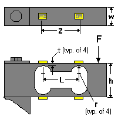

Design Considerations
Design ConsiderationsBending Beam - Binocular Element
Design Verification command
Design Considerations

Inputs (Allowed Range)
 Applied Force, F (0 to 10,000 lbf [0 to 44,480 N])
Applied Force, F (0 to 10,000 lbf [0 to 44,480 N])
Force applied as a point load normal to the beam on its centerline, or as an evenly distributed load along a line transverse to the centerline. Output is independent of the exact load placement, provided that the force is applied to the free end outside the hole area.
Distance Between Hole CL's, L (0.100 to 50 in [2.54 to 1270 mm])
Measured.
Radius, r (0.015 to 10 in [0.381 to 254 mm])
Measured.
Beam Width, w (0.020 to 10 in [0.51 to 254 mm])
Prismatic beam of uniform width in the gaged area.
Beam Height, h (0.100 to 10 in [2.54 to 254 mm])
Measured.
Minimum Thickness, t (0.003 to 5 in [0.076 to 127 mm])
Measured. Rectangular section.
Modulus of Elasticity (5E+6 to 50E+6 psi [34.5 to 345 GPa])
For the material from which the beam is constructed.
Gage Length (0.008 to 1.000 in [0.203 to 25.4 mm])
Obtained from strain gage catalog.
Gage Factor (1.0 to 5.0) Default value is 2.00.
From Engineering Data Form supplied with gages.
Calculated Values (Units)
 Pressing the COMPUTE BUTTON after entering the variables (within their acceptable ranges) calculates the following four output values:
Pressing the COMPUTE BUTTON after entering the variables (within their acceptable ranges) calculates the following four output values:
 Recommended Distance Between Gage Centerlines in (mm)
Recommended Distance Between Gage Centerlines in (mm)
The optimum gage position for measuring the maximum strain on a binocular design is slightly outboard of the hole centerline distance. This calculation is dependent on hole size and minimum beam thickness. To obtain the calculated span described below, the gages must be positioned at this calculated centerline distance. The resulting gage offset from the hole centerline should be equal at both ends of the transducer.
Nominal Gage Strain (microstrain)
The average of the absolute value of the strains in the surface of the beam under the four gages, when installed at the recommended gage centerline spacing. Ideally in the strain range of 1000 to 1700 microstrain at rated load.
Strain Variation (%)
Calculation of how much the strain varies under the active gage length. It is computed as a percentage from the difference in the maximum and minimum strains, divided by the maximum strain and multiplied times 100. Ideally under 15% variation.
Span at Applied Force (mV/V)
Calculated output of a full-bridge circuit with gages installed as shown in the above drawing, when the force is equal to the value entered. The mV/V units are millivolts of bridge output per volt of bridge excitation.
Error Messages
 "Design impracticable. Height must be greater than (2 * Radius + 2 * Minimum Thickness)."
"Design impracticable. Height must be greater than (2 * Radius + 2 * Minimum Thickness)."
Checks to ensure that the hole area is not larger than the beam height.
"The Gage Length is too long for the Hole Radius."
Displayed when the gage length exceeds the hole dialmeter. Helps prevent excessive strain variation under active gage length.
"Design impracticable. Hole Size exceeds the Beam Height."
"It is recommended that the Distance between Gage CLs be at least twice the Width dimension."
Suggested minimum aspect ratio for beam length:width. This helps to ensure a unifrom strain distribution across the beam width.
, "Lateral Buckling is possible when height divided by width exceeds 5."
Warns of unstable height:width aspect ratio.
�The calculated nominal gage strain exceeds 1700 microstrain, which is considered to be the maximum strain level recommended for normal full scale transducer operation.�
A value of 1700 microstrain is considered to be the maximum strain level recommended for normal transducers. However, TransCalc will calculate the nominal gage strain until the value reaches 5000 microstrain.
�Design Impracticable. Gage strain exceeds 5000 microstrain�
No common transducer material will survive 5000 microstrain without an unacceptable amount of permanent zero offset. Accordingly, no calculations are made for bridge output. Adjust inputs so that nominal gage strain is less than 5000 microstrain.